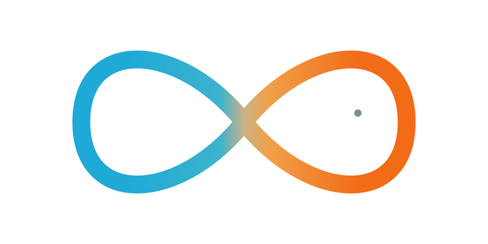

Rastreo GPS en tiempo real y dashcam con inteligencia artificial para flotas de carga, last-mile y servicios. Hardware certificado Suntech, plataforma propia y soporte humano en español 24/7.
Hardware Suntech certificado, instalado por técnicos propios y vinculado a tu plataforma desde el primer minuto. Sin contratos largos: pagas por unidad activa.
Dispositivo cableado para vehículos comerciales con entradas/salidas configurables, gateway Bluetooth para sensores externos y resistencia IP67. Ideal para flotas que necesitan precisión, durabilidad y bajo consumo.
Reportes cada 10 s en movimiento, geocercas configurables y A-GPS para fix rápido.
Lee sensores Bluetooth de temperatura, combustible o iButton sin instalar más hardware.
Inmoviliza el motor desde la plataforma cumpliendo protocolos antirrobo certificados.
Detecta aceleraciones, frenadas y giros bruscos con el acelerómetro integrado.
Dashcam con doble cámara —vía y conductor— impulsada por IA. Sube video en vivo por 4G, analiza eventos en la nube y envía alertas al operador antes de que algo ocurra. Pensada para reducir siniestralidad y proteger al conductor.
1080p frontal gran angular + cámara interior con visión nocturna IR.
Alerta de colisión frontal (FCW), salida de carril (LDW) y vehículo lento adelante.
Detecta fatiga, distracción, cigarro y uso del celular en tiempo real.
Sube video y eventos a la nube en tiempo real; descarga remota bajo demanda.
Misma instalación, mismos dispositivos. Diferentes tableros, alertas y reportes según tu operación.
Para tractocamiones y rabones que cruzan ciudades, casetas y patios logísticos.
Reparto urbano con paradas frecuentes, picos de demanda y rotación de conductores.
Para vehículos refrigerados con requisitos estrictos de temperatura y trazabilidad.
Para flotas de mantenimiento, seguridad privada o transporte de personal.
Equipo pesado, montacargas y remolques que rara vez salen del recinto.
Convoyes blindados y custodia con SLA estrictos y reporte a centrales C5.
Datos agregados de 240+ flotas operando con Lukon entre 2023 y 2025.
Al combinar GPS + dashcam IA durante los primeros 6 meses de operación.
Eliminando inactividad innecesaria y rutas sub-óptimas.
Tasa de recuperación con apagado remoto y enlace a autoridades.
Retorno en el primer año contra costo total de propiedad.
Sin sorpresas, sin instalaciones eternas. Una operadora dedicada acompaña todo el proceso.
Levantamos tipo de unidades, rutas y objetivos en una llamada de 30 min.
Propuesta en menos de 24 h. Sin penalidades por baja, contrato mes a mes.
Técnicos certificados instalan ST4315B + ST9730 en tu patio. Sin tiempos muertos.
Capacitación a tu CCO, alertas activas y app para conductores funcionando.
Cuéntanos qué tamaño tiene tu operación y en menos de 24 hábiles tendrás cotización, demo y un plan de instalación.
No. Trabajamos mes a mes. Si decides darte de baja, el hardware queda en tu propiedad después del periodo mínimo de 12 meses, o lo retiramos sin penalidades antes.
Sí. App iOS y Android con check-in, ruta sugerida, POD digital (foto + firma), y mensajería con el CCO. El operador no necesita un dispositivo adicional.
Sí. La cámara graba localmente en microSD y analiza eventos en el edge. Cuando recupera señal, sincroniza video, alertas y telemetría con la nube.
Mensualidad por unidad activa, con descuento por volumen a partir de 50 unidades. Hardware se cobra una sola vez o bajo esquema CapEx-cero (incluido en la mensualidad).
Sí. Contamos con API REST y webhooks documentados, e integraciones nativas con SAP, NetSuite, Odoo y los principales TMS del mercado mexicano.
Técnicos certificados Lukon en tu patio o en nuestros centros de servicio en CDMX, Monterrey, Guadalajara y Mérida. Sin pausas operativas: instalamos por turnos.

FishFlow